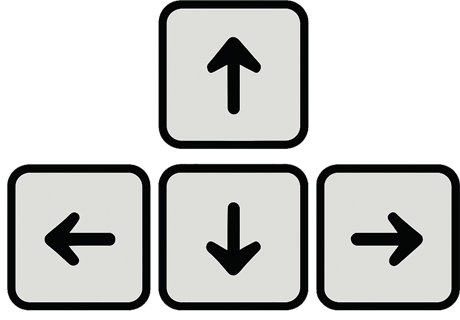

Sterowanie odbywa się za pomocą strzałek na klawiaturze.
Przy użyciu strzałek góra-dół dokonujemy obrotu wokół osi X (od lewej strony ekranu do prawej).
A przy użyciu strzałek lewo-prawo dokonuje obrotu wokół osi Y (od góry do dołu ekranu).
Warto wspomnieć o możliwości przytrzymania klawisza "SHIFT", wtedy strzałki lewo-prawo
dokonują obrotu wokół osi Z (oś ta, można powiedzieć "przechodzi" przez ekran).
Pole, do postawienia pionka, wybieramy w następujący sposób:
wybieramy dowolne pole z wartswy (wartswy ułożone są według osi Z) do której należy pole, które chcemy wybrać.
Następnie wybieramy już konkretne pole z podświetlonej warstwy.
Aby wysłać polecenie postawienia pionka na polu wystarczy kliknąć lewy przycisk myszy dwa razy.